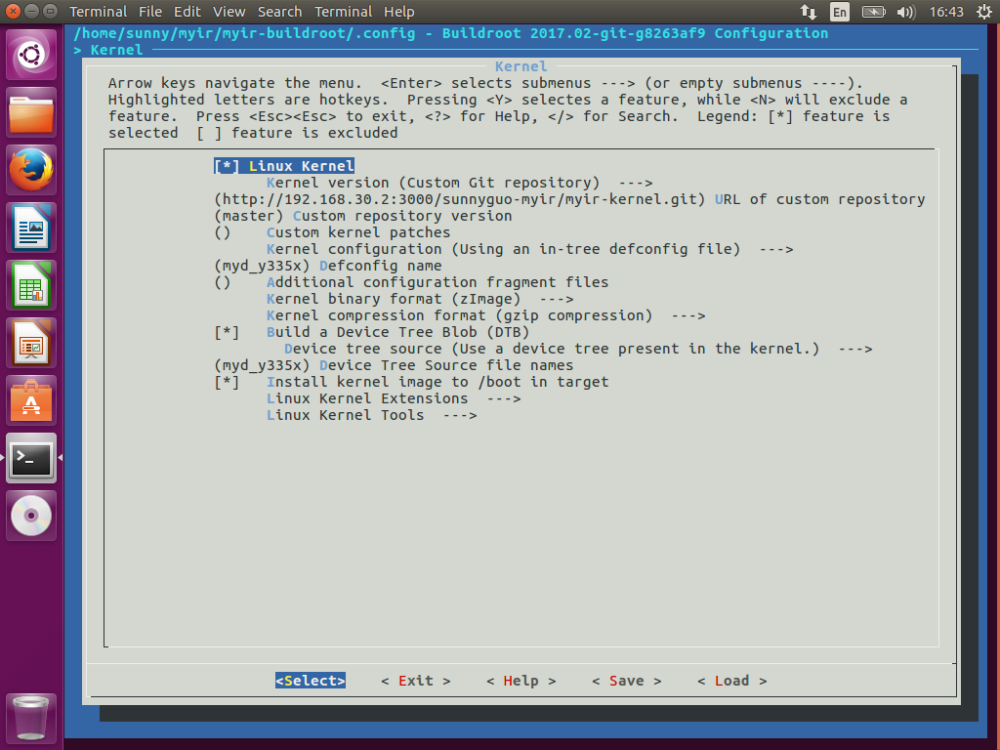

3.3 构建文件系统
本节主要介绍使用Buildroot进行文件系统的制作。
3.3.1 准备编译buildroot
拷贝出厂附带资料中的04-Linux_Source/Filesystem/myir-buildroot.tar.gz到本地开发主机，并解压到本地工作目录
$ ls -al <WORKDIR>/Filesystem/myir-buildroot
arch CHANGES configs dl linux output support
board Config.in COPYING docs Makefile package system
boot Config.in.legacy DEVELOPERS fs Makefile.legacy README toolchain
关于buildroot的目录结构可以参照https://buildroot.org/downloads/manual/manual.html.其中和MYD-AM335X系列开发板相关的部分主要位于<WORKDIR>/Filesystem/myir-buildroot/board/myir/myd_c335x,<WORKDIR>/Filesystem/myir-buildroot/board/myir/myd_y335x和<WORKDIR>/Filesystem/myir-buildroot/board/myir/myd_j335x目录。
3.3.2 配置说明
MYD-AM335X系列平台默认的配置文件位于<WORKDIR>/Filesystem/myir-buildroot/configs/.
| Config File | Description |
|---|---|
| myd_c335x_defconfig | Buildroot configuration without QT5 for MYC-AM335X CPU Module with NAND Flash |
| myd_c335x_emmc_defconfig | Buildroot configuration without QT5 for MYC-AM335X CPU Module With EMMC |
| myd_c335x_qt5_defconfig | Buildroot configuration with QT5 for MYD-AM335X development board with NAND |
| myd_j335x_defconfig | Buildroot configuration without QT5 for MYC-AM335X-J CPU Module with NAND Flash |
| myd_j335x_emmc_defconfig | Buildroot configuration without QT5 for MYC-AM335X-J CPU Module with EMMC |
| myd_j335x_qt5_defconfig | Buildroot configuration with QT5 for MYD-AM335X-J development board with NAND Flash |
| myd_y335x_defconfig | Buildroot configuration without QT5 for MYC-AM335X-Y CPU Module with NAND Flash |
| myd_y335x_defconfig | Buildroot configuration without QT5 for MYC-AM335X-Y CPU Module with EMMC |
| myd_y335x_qt5_defconfig | Buildroot configuration with QT5 for MYD-AM335X-Y development board with NAND Flash |
配置文件中包含bootloader， kernel，根文件系统相关的配置，用户也可以根据不同的应用场景需要编写自己的配置文件。先加载基本配置文件:
$ cd <WORKDIR>/Filesystem/myir-buildroot/
$ make myd_y335x_defconfig
再通过make menuconfig进入配置界面。然后可以跟内核配置一样，对当前的配置进行一些修改。下面以MYD-AM335X-Y平台为例，加以说明。
注意：使用Buildroot编译u-boot和kernel需要用户自行建好代码git仓库，然后用建好的代码git仓库路径替换下面bootloader和Kernel配置中的git路径，具体见下面的bootloader和Kernel的配置
交叉编译工具链
Buildroot可以使用外部交叉编译工具链，也可以自行编译产生内部交叉编译工具链，本手册采用的是内部交叉编译工具链。编译完成之后位于<WORKDIR>/Filesystem/myir-buildroot/output/host/usr/bin/。

系统配置
系统配置主要配置目标系统的主机名称，欢迎信息，Init子系统（busybox/systemv/systemd)和对应的设备管理子系统，这里还可以配置root的登陆密码，如下图所示为目标系统配置了root登陆密码myirtech。
如果不配置的话，密码为空。

bootloader配置
Bootloader配置主要配置bootloader的代码来源，以及代码的配置，编译，安装，如下图所示。

图中采用的是git协议从内网的git服务器获取代码。用户需要自行建好代码git仓库，然后用建好的代码git仓库路径替换这里设置的路径。可以根据实际情况配置合适的代码获取方式，具体的配置方式也可以参考buildroot用户手册。
下面根据开发板附带资料中的代码，创建自己的git仓库。
$ cd ~/
$ tar zxvf myir-u-boot.tar.gz
$ cd myir-u-boot
$ git init
$ git add . -f
$ git commit -m "Initial Version" -a
修改位于
BR2_TARGET_UBOOT_CUSTOM_REPO_URL="~/myir-u-boot/.git"
BR2_TARGET_UBOOT_CUSTOM_REPO_VERSION="master"
用户也可以直接使用开发板附带资料中的压缩包作为Buildroot中的U-boot代码来源,将其拷贝到<WORKDIR>/Filesystem/buildroot/board/myir/目录下。然后修改位于
BR2_TARGET_UBOOT_CUSTOM_TARBALL=y
# BR2_TARGET_UBOOT_CUSTOM_GIT is not set
BR2_TARGET_UBOOT_CUSTOM_TARBALL_LOCATION="file://$(TOPDIR)/board/myir/myir-u-boot.tar.gz"
BR2_TARGET_UBOOT_VERSION="custom"
注意：修改了u-boot的代码库中代码之后，buildroot并不能自动重新获取和编译。需要手动删除
<WORKDIR>/Filesystem/myir-buildroot/dl/uboot-master.tgz和<WORKDIR>/Filesystem/myir-buildroot/output/build/uboot-master目录。
Kernel配置
Kernel的配置和bootloader类似，也是配置内核的代码来源，和kernel的配置，编译，安装，如下图所示。

图中采用的是git协议从内网的git服务器获取代码。用户需要自行建好代码git仓库，然后用建好的代码git仓库路径替换这里设置的路径。可以根据实际情况配置合适的代码获取方式，具体的配置方式也可以参考buildroot用户手册。
下面根据开发板附带资料中的代码，创建自己的git仓库。
$ cd ~/
$ tar zxvf myir-kernel.tar.gz
$ cd myir-kernel
$ git init
$ git add . -f
$ git commit -m "Initial Version" -a
修改位于
BR2_TARGET_KERNEL_CUSTOM_REPO_URL="~/myir-kernel/.git"
BR2_TARGET_KERNEL_CUSTOM_REPO_VERSION="master"
用户也可以直接使用开发板附带资料中的压缩包作为Buildroot中的Kernel代码来源,将其拷贝到<WORKDIR>/Filesystem/buildroot/board/myir/目录下。然后修改位于
BR2_LINUX_KERNEL_CUSTOM_TARBALL=y
# BR2_LINUX_KERNEL_CUSTOM_GIT is not set
BR2_LINUX_KERNEL_CUSTOM_TARBALL_LOCATION="file://$(TOPDIR)/board/myir/myir-kernel.tar.gz"
BR2_LINUX_KERNEL_VERSION="custom"
注意：修改了kernel的代码库中代码之后，buildroot并不能自动重新获取和编译。需要手动删除
<WORKDIR>/Filesystem/myir-buildroot/dl/linux-master.tgz和<WORKDIR>/Filesystem/myir-buildroot/output/build/linux-master目录。
文件系统配置
文件系统的配置最终决定了<WORKDIR>/Filesystem/myir-buildroot/output/images目录下生成哪些格式的文件系统镜像，如下图所示。我们配置了ramdisk, EXT2/4以及UBIFS这几种文件系统镜像和rootfs.tar.gz根文件系统压缩包。
用户拿这个压缩包用于nfsroot文件系统加载，也可以生成其它格式的文件系统镜像。
除此之外，编译完成之后还在<WORKDIR>/Filesystem/myir-buildroot/output/host/usr/sbin目录下生成一些本地主机上的文件系统工具，如制作ubi文件系统的工具mkfs.ubifs, ubinize等。我们可以用这些工具重新制作基于rootfs.tar.gz
的UBIFS格式文件系统(注意用本地主机上实际工作目录替换
创建一个ubinize.cfg文件,内容如下：
[ubifs]
mode=ubi
vol_id=0
vol_type=dynamic
vol_name=rootfs
vol_alignment=1
vol_flags=autoresize
image=rootfs.ubifs
准备需要打包的根文件系统目录rootfs并打包
$ export PATH=$PATH:<WORKDIR>/Filesystem/myir-buildroot/output/host/usr/sbin
$ tar zxvf rootfs.tar.gz
$ mkfs.ubifs -d rootfs -e 0x1f000 -c 2048 -m 0x800 -x lzo -F -o rootfs.ubifs
$ ubinize -o rootfs.ubi -m 0x800 -p 0x20000 -s 512 -m 2048 -O 2048 ubinize.cfg

工具包配置
工具包的配置相对比较简单，但也是用户经常会改动的配置项。linux下一些常见的工具基本上都能够在这里找到。比如硬件测试相关的I2C-tools, spi-tools, can-utils等，网络相关的DHCP, TFTP, SSH等, 用户可以根据需要自行配制，也可以添加自己编写的其他工具包。关于如何添加自己的工具包，在buildroot中也有详细的介绍，参见https://buildroot.org/downloads/manual/manual.html#adding-packages,这里不再赘述。

3.3.3 开始构建
Buildroot构建的过程类似于Linux Kernel的构建，只需要简单的命令就可以完成:
$ make
编译过程中会生成一个output目录，最终生成的输出的文件位于<WORKDIR>/Filesystem/myir-buildroot/output/images目录。
$ls -al output/images
boot.vfat MLO_usbmsc rootfs.cpio rootfs.tar u-boot_emmc.img u-boot_usbmsc.img uEnv.txt
MLO myd_y335x.dtb rootfs.cpio.gz rootfs.tar.gz u-boot.img uEnv_mmc.txt uEnv_usbmsc_ramdisk.txt
MLO_emmc myd_y335x_emmc.dtb rootfs.cpio.uboot rootfs.ubi u-boot_nand.img uEnv_ramdisk.txt uEnv_usbmsc.txt
MLO_nand ramdisk.gz rootfs.ext2 rootfs.ubifs u-boot_sd.img uEnv_sd_ramdisk.txt zImage
MLO_sd readme.txt rootfs.ext4 sdcard.img u-boot-spl.bin uEnv_sd.txt
output/images 目录下的输出文件基本上包含了bootloader, kernel,以及各种格式的文件系统镜像。这些文件在接下来的系统升级章节将会详细介绍。
3.3.4 Arago构建的文件系统
在MYD-AM335X系列开发板支持基于Arago构建的文件系统镜像，具体的构建方法可以参考TI官网WIKI页面。 http://processors.wiki.ti.com/index.php/Processor_SDK_Building_The_SDK.